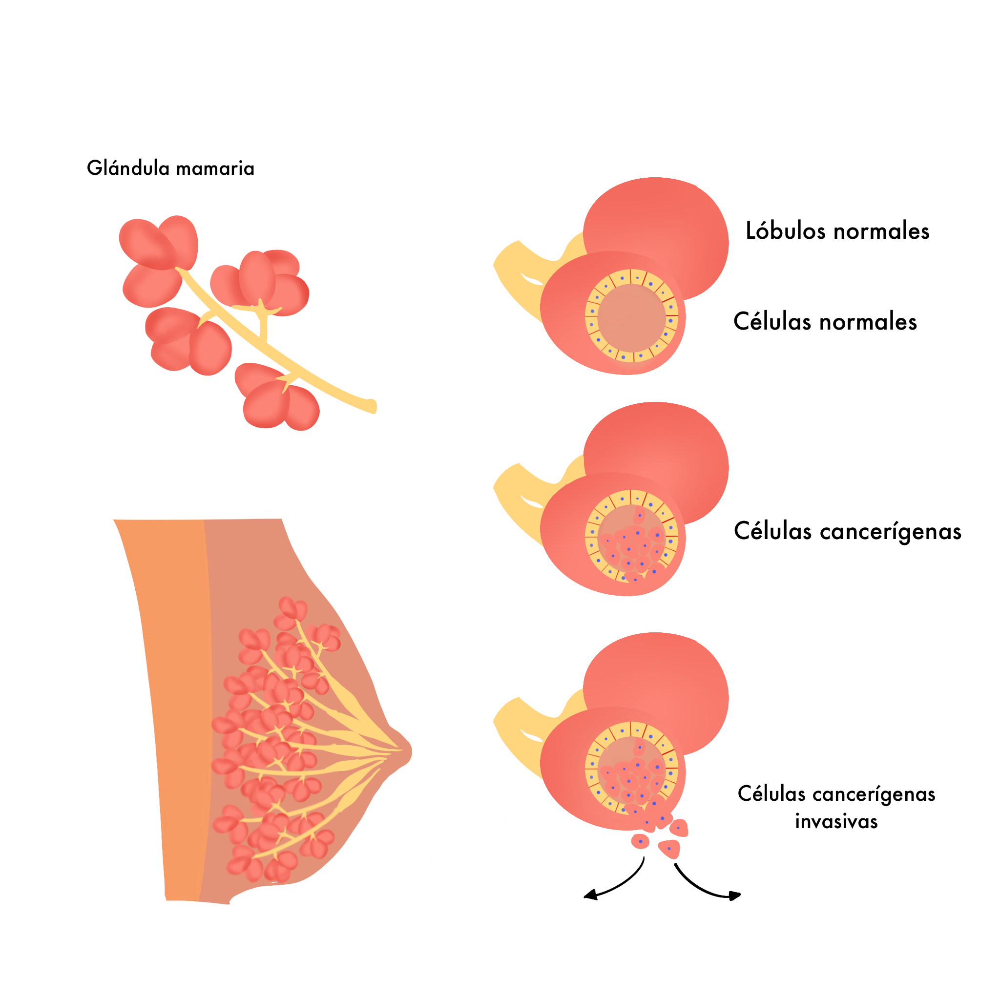

El cáncer de mama es una enfermedad provocada por la multiplicación sin control de las células de la mama, comenzando en diferentes áreas de la mama como los conductos, lobulillos o el tejido conectivo, lo que resulta en diferentes tipos de cáncer dependiendo de las células que se vuelvan cancerosas. El tejido conectivo es lo que sostiene las parte de la mama y se encuentra a su alrededor dentro de la mama se encuentran los conductos que transportan la leche hasta el pezón y los lobulillos son las glándulas productoras de leche donde generalmente comienza el cáncer. El cáncer puede hacer metástasis que se refiere a que se ha extendido a diferentes partes del cuerpo al viajar por los vasos sanguíneos o linfáticos.
Los dos tipos más comunes de cáncer son carcinoma lobulillar infiltrante y carcinoma ductal infiltrante, en el lobulillar infiltrante el cáncer se puede extender de los lobulillos a los tejidos mamarios, de igual forma se puede extender a otras partes. En el carcinoma ductal infiltrante las células se multiplican por fuera de los conductos para después invadir el tejido mamario, estas células cancerosas pueden formar metástasis.
 {# #} {{section_header("sintomas", section_headers)}}Es muy importante conocer cómo lucen y sienten normalmente los senos propios, de igual forma hacerse pruebas de detección con regularidad pero incluso así las mamografías no detectan todos los tipos de cáncer de mama es por esto que es importante detectar los cambios físicos en los senos y que esté al tanto de los signos y síntomas del cáncer de mama.
Los síntomas o indicadores de cáncer de mama varían entre cada persona, incluso se han dado casos en los que no se presenta ningún síntoma, pero algunas señales a las que debe prestar atención son:
Los dos principales factores que aumentan el riesgo de contraer cáncer de mama son ser mujer y hacerse mayor, de igual forma existen casos que aunque no se poseen los factores sí han llegadoa contraer cáncer de mama, pero los principales factores de riesgo que no pueden cambiar son los siguientes:
La probabilidad de que una mujer desarrolle cáncer de mama es mayor si su madre, hermana o hija (familiares de primer grado) o algún otro familiar de la parte paterna haya desarrollado cáncer de mama, es el mismo caso con algún pariente del género masculino.
La mayoría de los casos de cáncer de mama se identifican después de los 50 años.
Tener las mamas densas puede significar un factor de riesgo ya que el tener más tejido conjuntivo y adiposo puede dificultar la detección del cáncer en una mamografía.
Una mujer que haya recibido un tratamiento de radiografía antes de los 30 años.
Haber experimentado un inicio prematuro de la menstruación antes de los 12 años o que su menopausia comenzó después de los 55 años, esto debido a que se exponen más tiempo a hormonas aumentando el riego.
Cambios heredados en los genes BRCA1 y BRCA2 estos genes presentan mayor probabilidad de generar cáncer de mama.
Agrupación George Papaicolau A.C. Sonora
Teléfono Domicilio: 662-216-4883
Email Trabajo: agphillo@hotmail.com
Grupo RETO Hermosillo, A.C.
Reforma final Sur, esquina Río Magdalena Fraccionamiento Vado del Río
C.P. 83200
Hermosillo, Sonora México.
Hospital Oncologico del Estado de Sonora
Vía Telefónica: 01(662)217-58-34 extensión 128
por Mail: gruporetohermosilloac@hotmail.com
https://gruporetohermosilloac.com/index.php?pag=contactanos